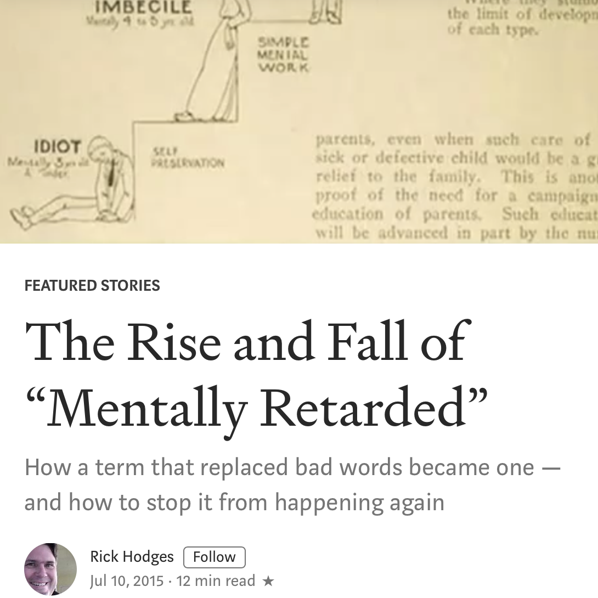

The Rise and Fall of “Mentally Retarded”

An interesting article on the "euphemism treadmill" of terms used to describe a condition. I'm absolutely guilty of having been one of the "10 year olds" he describes, but I'm sensitive enough to find the article informative and share it with others. I found myself nodding along at several points, but this paragraph particularly resonated with me:
By declaring the word an insult and also no longer an official term, the community set up a circular argument. If “mental retardation” is no longer an official, or acceptable, term for a specific group of people, how does using it as insult against those who aren’t in that group denigrate those who are? Like "idiot," "moron" and "imbecile," "retarded" is no longer an official term; it is merely an insult on par with "stupid." It doesn’t officially refer to any group, and so it doesn’t denigrate any group. The previous link between insult and official term will fade from memory, as with "idiot." One way or the other, by choosing to abandon the official term, the community gives up the right to be offended by it. They don’t own the word anymore. Instead, we will have to go through this process all over again with the new term.
Hm.